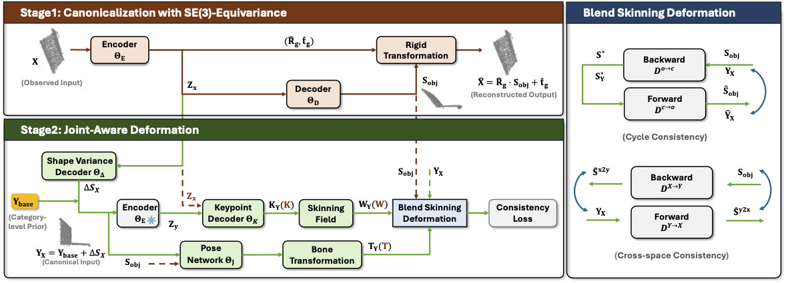

Existing methods for category-level object articulation from a single 3D observation often rely on dense supervision, multi-frame inputs, or CAD templates, and still struggle to disentangle geometry from articulation or to recover explicit joint parameters. We propose SCAPO, a self-supervised framework that estimates canonical geometry, rigid part segmentation, and joint pivots, axes, and articulation states from a single RGB-D observation without ground-truth labels or category-specific models. Our SCAPO first uses an SE(3)-equivariant vector-neuron autoencoder to factor out global pose and align diverse instances into a shared canonical space. On this aligned shape, a joint-aware blend-skinning module is then designed to model part motion. We learn this representation through cycle reconstruction between observed and canonical shapes and cross-space alignment with a learnable canonical template that decouples shared category geometry from instance-specific residual shape. Experiments on synthetic and real articulated-object datasets show that our SCAPO recovers consistent part structure and accurate articulation parameters and outperforms all self-supervised baselines.

@article{park2021nerfies,
author = {Can Zhang and Gim Hee Lee},
title = {SCAPO: Self-Supervised Category-Level Articulated Pose Estimation from a
Single 3D Observation},
journal = {CVPR},
year = {2026},
}